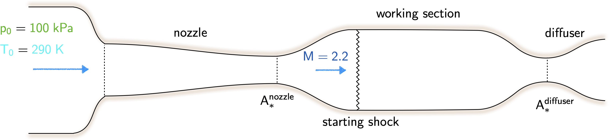

Coding assignment
Instructions
This coding assignment can be completed individually, in pairs, or a group of three (and not more); please ensure that all group member names are written down at the top of your solution. Your submission must be a single Jupyter notebook (in python) that can run as is, i.e., it should not require any external files.
Due date: 21:00 on December 1st 2023 online via Canvas.
Problem statement
A closed circuit supersonic wind tunnel of fixed geometry has a working section of \(2.5 \; m^2\). The test section Mach number is to be \(\require{color}{\color[rgb]{0.041732,0.352132,0.699576}2.2}\)

Find the area of the nozzle throat. \(\require{color}{\color[rgb]{0.400002,0.400116,0.998569}[3]}\)
Neglecting all losses except those due to essential normal shocks, find the minimum diffuser throat area. \(\require{color}{\color[rgb]{0.400002,0.400116,0.998569}[4]}\)
Either calculate the power required to start the tunnel, or calculate the minimum power required to keep the tunnel running at a Mach number of \(\require{color}{\color[rgb]{0.041732,0.352132,0.699576}2.2}\) in the working section. \(\require{color}{\color[rgb]{0.400002,0.400116,0.998569}[6]}\)
For both the above, assume that the stagnation pressure and stagnation temperature at the nozzle inlet are \(\require{color}{\color[rgb]{0.315209,0.728565,0.037706}100} \; {\color[rgb]{0.315209,0.728565,0.037706}kPa}\) and \(\require{color}{\color[rgb]{0.164799,0.878862,0.723179}290 \; K}\) respectively, that the compressors driving the flow are reversible and adiabatic and that the air is cooled between the compressors and the inlet to the working section. (Assume that the fluid in the wind tunnel is air, and that it is a perfect gas with \(R=287 J/kg \; K\), \(\require{color}{\color[rgb]{0.986252,0.007236,0.027423}c}_{\color[rgb]{0.315209,0.728565,0.037706}p} = {\color[rgb]{0.986252,0.007236,0.027423}1006} \; {\color[rgb]{0.986252,0.007236,0.027423}J/(kg \cdot K)}\) and \(\gamma = 1.4\)).
- Using your own definition of the geometry, i.e., you can define the boundaries using linear or polynomial, or other parametric curves, develop a code that lets you visualize the Mach number, static pressure, stagnation pressure, static temperature, and stagnation temperature contours of the flow through the wind tunnel. Clarify any assumptions you are making with regards to this. \(\require{color}{\color[rgb]{0.400002,0.400116,0.998569}[30]}\)
Extra credit: Only when you are done with (a, b, c, d) should you attempt this. Re-visit your answer for d, but this time consider a flow that has friction.
You might find this link to be particularly useful.
Solution
The solutions below are strictly for parts (a-c). For (d) and (e) your submissions will be checked based on whether (i) the code does work, and (ii) if the Mach number and other flow quantities are correctly plotted.
- If the nozzle is designed for \({\color[rgb]{0.041732,0.352132,0.699576}M}={\color[rgb]{0.041732,0.352132,0.699576}2.2}\) at the end of the divergence, we have
\[ \large \require{color} \frac{\dot{m} \sqrt{{\color[rgb]{0.986252,0.007236,0.027423}c}_{\color[rgb]{0.315209,0.728565,0.037706}p} {\color[rgb]{0.164799,0.878862,0.723179}T_0}}}{A_{\ast}^{nozzle} {\color[rgb]{0.315209,0.728565,0.037706}p_0}} = 1.281 \; \; \; (Table \; lookup \; for \; {\color[rgb]{0.041732,0.352132,0.699576}M}={\color[rgb]{0.041732,0.352132,0.699576}1}) \]
and
\[ \large \require{color} \frac{\dot{m} \sqrt{{\color[rgb]{0.986252,0.007236,0.027423}c}_{\color[rgb]{0.315209,0.728565,0.037706}p} {\color[rgb]{0.164799,0.878862,0.723179}T_0}}}{A_{ws} {\color[rgb]{0.315209,0.728565,0.037706}p_0}} = 0.639\; \; \; (Table \; lookup \; for \; {\color[rgb]{0.041732,0.352132,0.699576}M}={\color[rgb]{0.041732,0.352132,0.699576}2.2}) \]
Therefore the area of the throat in the nozzle is given by:
\[ \large \require{color} A_{\ast}^{nozzle} = \frac{0.639}{1.281} \times 2.5 = 1.247 \; m^2. \]
- The diffuser must be designed so that it does not choke under the worst possible starting conditions, i.e., when the strong possible shock exists upstream. With \({\color[rgb]{0.041732,0.352132,0.699576}M}={\color[rgb]{0.041732,0.352132,0.699576}2.2}\) in the working section, we have \({\color[rgb]{0.315209,0.728565,0.037706}p_{0,\textrm{downstream of shock}}} / {\color[rgb]{0.315209,0.728565,0.037706}p_{0,\textrm{upstream of shock}}} = 0.628\).
Then we have
\[ \large \require{color} \frac{\dot{m} \sqrt{{\color[rgb]{0.986252,0.007236,0.027423}c}_{\color[rgb]{0.315209,0.728565,0.037706}p} {\color[rgb]{0.164799,0.878862,0.723179}T_0}}}{A_{ws} {\color[rgb]{0.315209,0.728565,0.037706}p_{0s}}} \leq 1.281 \]
Now recognizing that the non-dimensional flow capacity is greatest when the Mach number is closest to unity, and if we assume that the non-dimensional flow capacity at the diffuser throat is near unity, we have the following inequality:
\[ \large \require{color} \frac{A_{\ast}^{diffuser}}{A_{\ast}^{nozzle}} \geq \frac{{\color[rgb]{0.315209,0.728565,0.037706}p_{0,\textrm{upstream of shock}}}}{{\color[rgb]{0.315209,0.728565,0.037706}p_{0,\textrm{downstream of shock}}}} \Rightarrow A_{\ast}^{diffuser} \geq \frac{1.247}{0.628} = 1.9856 \; m^2. \]
- The key here is to leverage the isentropic flow relations. First, following the solution above we know that \({\color[rgb]{0.315209,0.728565,0.037706}p_{0,\textrm{downstream of shock}}}= {\color[rgb]{0.315209,0.728565,0.037706}62.8 \; kPa}\). As the problem is a closed-circuit wind tunnel, this implies that flow leaving the diffuser goes back to the compressor, serving as its inlet, and consequently the high pressure air output of the compressor serves as the inlet to the wind tunnel. Thus we can write
\[ \large \require{color} \frac{{\color[rgb]{0.164799,0.878862,0.723179}T_{0,\textrm{compressor exit}}}}{{\color[rgb]{0.164799,0.878862,0.723179}T_{0,\textrm{compressor inlet}}} } = \left( \frac{{\color[rgb]{0.315209,0.728565,0.037706}p_{0, \textrm{compressor exit}}}}{{\color[rgb]{0.315209,0.728565,0.037706}p_{0,\textrm{compressor inlet}}}}\right)^{\frac{\gamma - 1}{\gamma}} \]
where
- \(\mathsf{{\color[rgb]{0.164799,0.878862,0.723179}T_{0,\textrm{compressor inlet}}} = {\color[rgb]{0.164799,0.878862,0.723179}290 K}}\) owing to the fact that the stagnation temperature does not change from the wind tunnel inlet to the wind tunnel exit (and consequently the compressor inlet).
- \(\mathsf{{\color[rgb]{0.315209,0.728565,0.037706}p_{0,\textrm{compressor exit}}} = {\color[rgb]{0.315209,0.728565,0.037706}100 kPa}}\) as the compressor exit stagnation pressure is the same as the wind tunnel inlet stagnation pressure.
- \(\mathsf{{\color[rgb]{0.315209,0.728565,0.037706}p_{0,\textrm{compressor inlet}}} = {\color[rgb]{0.315209,0.728565,0.037706}62.8 kPa}}\) as the flow is isentropic downstream of the shock to the compressor inlet.
Following the above we can calculate the stagnation temperature of the fluid leaving the compressor, i.e.,
\[ \large \require{color} \frac{{\color[rgb]{0.164799,0.878862,0.723179}T_{0,\textrm{compressor exit}}}}{{\color[rgb]{0.164799,0.878862,0.723179}290}} = \left( \frac{{\color[rgb]{0.315209,0.728565,0.037706}100}}{{\color[rgb]{0.315209,0.728565,0.037706}62.8}} \right)^{\frac{\gamma - 1}{\gamma}} \; \; \Rightarrow \; \; {\color[rgb]{0.164799,0.878862,0.723179}T_{0,\textrm{compressor exit}}} = {\color[rgb]{0.164799,0.878862,0.723179}331.22 \; K} \]
Note that the statement, the air is cooled between the compressors and the inlet to the working section implies that there is a cooling system for the air leaving the compressor. Thus, the work done by the compressor must not include any cooling effects, hence we have the relations above.
The work done by the compressor may be written as the change in enthalpies.
\[ \large \require{color} {\color[rgb]{0.562040,0.190215,0.568721}w} = {\color[rgb]{0.986252,0.007236,0.027423}c}_{\color[rgb]{0.315209,0.728565,0.037706}p} \left( {\color[rgb]{0.164799,0.878862,0.723179}T_{0,\textrm{compressor exit}}} - {\color[rgb]{0.164799,0.878862,0.723179}T_{0,\textrm{compressor inlet}}} \right) = {\color[rgb]{0.986252,0.007236,0.027423}1.006} \times \left( {\color[rgb]{0.164799,0.878862,0.723179}331.22} - {\color[rgb]{0.164799,0.878862,0.723179}290} \right) = {\color[rgb]{0.562040,0.190215,0.568721}41.46 \; kJ / kg} \]
Now, in the working section we know the flow capacity is given by:
\[ \large \require{color} \frac{\dot{m} \sqrt{{\color[rgb]{0.986252,0.007236,0.027423}c}_{\color[rgb]{0.315209,0.728565,0.037706}p} T_0}}{A_{ws} {\color[rgb]{0.315209,0.728565,0.037706}p_{0}}} = 0.639 \Rightarrow \dot{m} = \frac{0.639 \times 2.5 m^2 \times {\color[rgb]{0.315209,0.728565,0.037706}100} \; \times {\color[rgb]{0.315209,0.728565,0.037706}10^3 \; Pa}}{\sqrt{{\color[rgb]{0.986252,0.007236,0.027423}1006} \; J/kg \; K\times {\color[rgb]{0.164799,0.878862,0.723179}290 \; K}}} = 295.76 \; kg/s \]
Thus, the power with a shock in the working section is
\[ \large \require{color} Power = 295.76 \; kg/s \times {\color[rgb]{0.562040,0.190215,0.568721}41.46 \; kJ/kg} \times 10^{-3} \; MJ/kJ = 12.22 \; MW \]
As mentioned, students can get either full credit for the above, or for the solution below. Full credit implies that atleast one power was correctly computed. Students will receive extra if both solutions are correct.
Please note that this problem can also be solved assuming that the wind tunnel is run with the shock in the diffuser. This would be the scenario when the wind tunnel has been running for a while. In such a case we use \(A_{\ast}^{diffuser} = 1.9856 \; m^2\). Thus, the non-dimensional flow capacity becomes
\[ \large \require{color} \frac{\dot{m}\sqrt{c_p T_0}}{A_{\ast}^{nozzle} {\color[rgb]{0.315209,0.728565,0.037706}p_0}} \times \frac{A_{\ast}^{nozzle}}{A_{\ast}^{diffuser}} = 1.281 \times \frac{1.247}{1.9856} = 0.804 \]
Note that from the tables, this implies that we have a Mach number of \({\color[rgb]{0.041732,0.352132,0.699576}1.930}\) before the diffuser where the shock occurs. At this Mach number the stagnation pressure drop across the shock is \(0.7535\).
From this, we can work out the stagnation temperature rise across the compressor, i.e.,
\[ \large \require{color} \frac{{\color[rgb]{0.164799,0.878862,0.723179}T_{0,\textrm{compressor exit}}}}{{\color[rgb]{0.164799,0.878862,0.723179}290}} = \left( \frac{{\color[rgb]{0.315209,0.728565,0.037706}100}}{{\color[rgb]{0.315209,0.728565,0.037706}75.35}} \right)^{\frac{\gamma - 1}{\gamma}} \; \; \Rightarrow \; \; {\color[rgb]{0.164799,0.878862,0.723179}T_{0,\textrm{compressor exit}}} = {\color[rgb]{0.164799,0.878862,0.723179}314.42\; K} \]
As before, we can use this to work out the mass flow rate
\[ \large \require{color} \dot{m} = 0.804 \times \frac{A_{\ast}^{diffuser} \times {\color[rgb]{0.315209,0.728565,0.037706}p_{0}} }{\sqrt{{\color[rgb]{0.986252,0.007236,0.027423}c}_{\color[rgb]{0.315209,0.728565,0.037706}p}{\color[rgb]{0.164799,0.878862,0.723179}T_0}}} = \frac{3.171 \times 1.9856 \times {\color[rgb]{0.315209,0.728565,0.037706}100 \times 10^3} }{\sqrt{{\color[rgb]{0.986252,0.007236,0.027423}1006} \times {\color[rgb]{0.164799,0.878862,0.723179}290}}} = 295.56 \; kg/s \]
Finally, we can work out the power output by the compressor, i.e.,
\[ \large \require{color} Power = 295.56 \; kg /s \times {\color[rgb]{0.986252,0.007236,0.027423}1006} \times \left( {\color[rgb]{0.164799,0.878862,0.723179}314.42} - {\color[rgb]{0.164799,0.878862,0.723179}290} \right) = 7.26 \; MW \]
In practice this latter solution yields the minimum power.